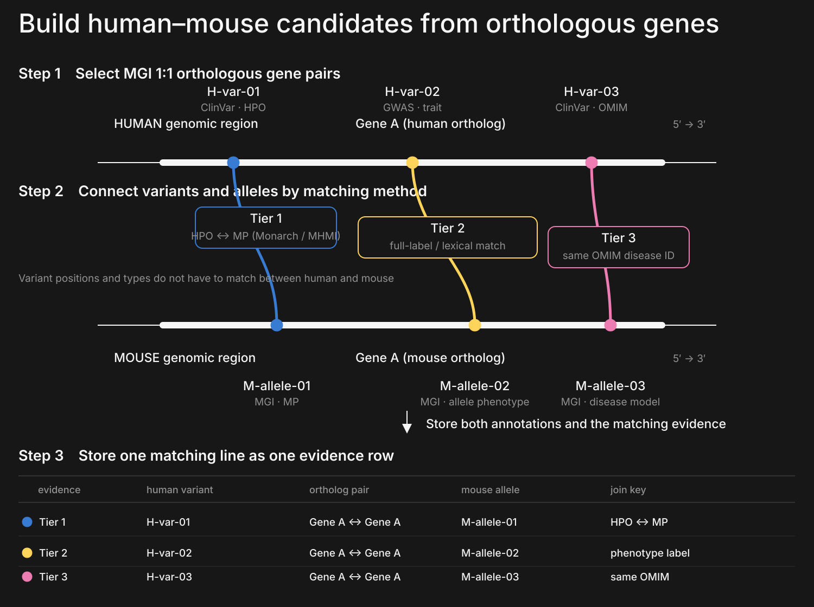
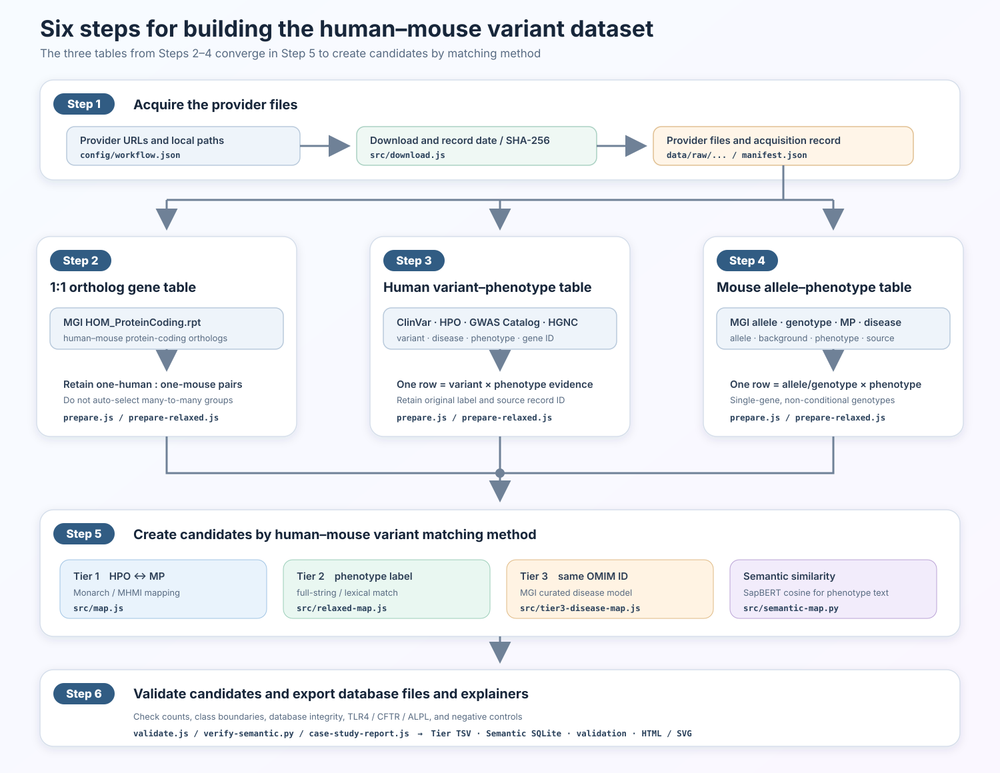

A reproducible strategy for retrieving useful human–mouse variant pairs through 1:1 orthologous genes and several explicitly recorded matching methods, even when variant positions and molecular classes differ.
raw data: 2026-09-11semantic output: 2026-09-24implementation: 2.0.0GRCh381:1 protein ortholog only
The compared pair and the evidence supporting its connection are stored separately. MGI 1:1 protein-coding orthologous gene pairs define the comparison scope. Within that scope, HPO–MP mappings, phenotype labels, shared OMIM disease identifiers, and phenotype-text similarity are recorded as distinct evidence. A candidate connection does not establish biological equivalence between the two variants.
Compared objects and matching evidence
The analysis pairs a human variant with a mouse allele. Candidate comparisons are restricted to human–mouse gene pairs reported by MGI as 1:1 protein-coding orthologs. Phenotype or disease evidence is then evaluated for each candidate pair, and one pair may carry more than one type of evidence.
Tier 1 denotes HPO–MP mapping, Tier 2 denotes ortholog plus phenotype-label matching, and Tier 3 denotes a shared OMIM disease identifier. SapBERT phenotype-text similarity is calculated separately and recorded as Semantic class A/B/C/D. Neither Tier number nor Semantic class is a probability of biological equivalence.

Thin horizontal lines are genomic regions, thick lines are genes, and colored points are variants or alleles. Each colored line represents one type of matching evidence; the human and mouse variant positions do not need to coincide. The previous overall structure diagram is retained separately.
The following sections present the input data and construction workflow first, followed by the matching rules, text comparison, storage design, and validation cases.
Datasets used
The table lists the files supplied to the analysis. Provider dates or release names, acquisition dates, and SHA-256 values were recorded so that the same inputs can be identified later. Complete hashes and URLs are in DATA_VERSIONS.md and manifest.json.
Downloaded provider files remain unchanged in data/raw/; separate analysis tables are written to data/processed/. “Make identifiers and columns consistent” means converting forms such as MIM:123456 to OMIM:123456, converting ontology URLs to HP:... or MP:..., and placing gene IDs, variant/allele IDs, phenotypes, and sources in defined columns. Original labels and source record IDs remain available. ClinVar coordinates and REF/ALT are not converted to another assembly here.

Steps 2–4 create the ortholog, human-variant, and mouse-allele tables in parallel. Their outputs converge at Step 5, followed by validation in Step 6.
Step 1: acquire datasets. Download provider files and record provider date/release, acquisition date, size, and SHA-256.
Step 2: build the 1:1 ortholog table. Restrict comparisons to gene pairs reported by MGI as 1:1 orthologs. This reuses MGI information rather than inventing a new biological gene score. Ensembl Compara is an alternative that infers 1:1, one-to-many, and many-to-many relationships from gene trees; this analysis chooses the direct MGI 1:1 report to keep each candidate gene pair unambiguous.
Step 3: build the human variant–phenotype table. Create one row per variant × phenotype evidence.
Step 4: build the mouse allele–phenotype table. Create one row per allele/genotype × phenotype evidence and retain background and provenance.
Step 5: create candidates by matching method. Join the three tables and calculate Tier 1, Tier 2, Tier 3, and Semantic similarity independently.
Step 6: validate and export. Check counts, class boundaries, database integrity, the three cases, and negative controls.
Human-dataset notes
ClinVar and HPO
Join only when the ClinVar condition ID and HPO disease ID agree. Use HPO aspect P, exclude NOT, and do not assign an HPO term to every variant merely because the gene matches.
GWAS Catalog
Require P ≤ 5×10⁻8 and a gene directly listed in SNP_GENE_IDS. Exclude nearest-gene-only assignments and example-specific manually added literature phenotypes.
Mouse-dataset notes
Exclude multigene and conditional genotypes. Tier 3 uses only MGI-curated disease models and does not infer an OMIM identifier from a similar disease name.
Matching methods and generated candidates
Tier 1–3 name the information used to connect human and mouse records; the numbers are not a confidence ranking. All three methods are applied only within the MGI 1:1 orthologous gene pairs defined above.
Tier 1 uses HPO–MP mappings, Tier 2 compares phenotype labels, and Tier 3 compares OMIM disease identifiers on ClinVar conditions and MGI-curated disease models. SapBERT phenotype-text similarity is a separate exploratory method.
class
human side
mouse side
matching rule
rows
Tier 1
HPO from a ClinVar condition
MP on an MGI allele/genotype
Monarch UPheno or MHMI reports the HPO–MP mapping
1,089,740
Tier 2
ClinVar condition or GWAS trait label
MGI MP label or allele name
B: transformed full-string identity; C: informative-token match
76,619
Tier 3
OMIM ID on a ClinVar condition
OMIM ID on an MGI curated disease model
same OMIM identifier
331,245
Semantic similarity
ClinVar/GWAS phenotype text
MGI phenotype text
SapBERT cosine class A–D
A 1,702 B 4,412 C 66,367 D 2,836,628
The B/C labels in the Tier 2 row are rules within Tier 2 and are distinct from Semantic class A/B/C/D. For Semantic similarity, all pairs meeting the A/B thresholds are retained; for C/D, only the top 20 mouse texts per human text within the ortholog pair are retained.
Here, “phenotype text” means a phenotype label attached to a human or mouse record, not a variant sequence or coordinate. Each human text is treated as a query and compared with mouse texts from the corresponding MGI 1:1 orthologous gene pair. Texts from different ortholog pairs are not compared.
The human query is the phenotype_label in human_variant_phenotypes.tsv.gz, representing a ClinVar condition or significant GWAS trait. The comparison target is the phenotype_label in mouse_variant_phenotypes.tsv.gz, representing an MGI MP label, allele name, or disease label. Thus, the score describes similarity between two phenotype texts, not similarity between the variants themselves.
SapBERT converts each text into a 768-dimensional vector, and cosine similarity is calculated between the human query and mouse comparison text. Each row retains both texts, score, Semantic class A/B/C/D, ortholog pair, variant/allele annotations, and review flags for direction conflicts or negation. SapBERT does not directly determine biological equivalence.
phenotype_label from human_variant_phenotypes.tsv.gz: a ClinVar condition or significant GWAS trait
mouse comparison text
phenotype_label from mouse_variant_phenotypes.tsv.gz: an MGI MP label, allele name, or disease label
comparison scope
within the same MGI 1:1 orthologous gene pair only
text representation
pre-pooler CLS, 768 dimensions, maximum 128 tokens; longest observed input 68 tokens, zero truncations
score and classes
cosine similarity; A ≥ 0.8, B = 0.7–<0.8, C = 0.5–<0.7, D < 0.5; D is retained but excluded from default-use views
outputs
phenotype_pairs_class_A/B/C/D.tsv.gz, variant/allele annotations, and correspondence.sqlite
model files used
revision 090663c3…51a4d, model-weights SHA-256 a4696930…25614; see the model manifest
Classes are A = 0.8–1.0, B = 0.7–<0.8, C = 0.5–<0.7, and D = <0.5. A/B/C are exposed through default-use views; D is retained for audit but excluded from those views. These thresholds are not calibrated biological-confidence probabilities.
Data-generation and validation scripts
The scripts below implement acquisition, table construction, method-specific matching, and validation. src/run-workflow.js runs these processing and test stages in sequence.
script
function
main outputs
src/download.js
Download configured sources and record dates, size, and SHA-256
data/raw/..., manifest.json
src/prepare.js
Build the ortholog, ClinVar–HPO, and MGI allele–MP tables
ortholog_mapping.tsv, strict human/mouse tables
src/prepare-relaxed.js
Build the human and mouse phenotype-evidence tables
Check class boundaries, database integrity, and views
semantic/verification.json
src/case-study-report.js
Summarize TLR4, CFTR, and ALPL
semantic/case_study_summary.tsv
src/run-workflow.js
Run the processing and test stages in sequence
Outputs from the scripts above
Storing compared objects and supporting evidence
The compared human-variant/mouse-allele pair should be distinguished from the evidence used to connect that pair. The following variant_pair and connection_evidence tables illustrate this storage principle; they are conceptual units and should not be confused with the physical table names in the current Semantic SQLite database.
variant_pair: what is compared
One row identifies the human variant, mouse variant/allele, and ortholog pair. Three different supporting routes do not create three duplicate pair rows.
connection_evidence: why they are linked
Separate rows state that the pair was linked by HPO–MP, a shared OMIM identifier, or a text score. Each row retains its original phenotype and source record.
Concrete storage example for the CFTR pair
destination
pair ID
human side
mouse side
meaning
variant_pair
CFTR-rs113993960-MGI1856709
CFTR / rs113993960
Cftr / MGI:1856709
The compared objects; one row
connection_evidence
same
HP:0001508 Failure to thrive
MP:0001732 postnatal growth retardation
Tier 1 evidence through skos:narrowMatch
connection_evidence
same
ClinVar condition OMIM:219700
MGI disease model OMIM:219700
Tier 3 evidence through the same disease ID
Current deliverables contain Tier 1/2/3 gzip TSV files and a Semantic SQLite database. Its physical tables are ortholog, phenotype_text, human_annotation, mouse_annotation, phenotype_match, and metadata. The active_phenotype_pairs and active_variant_correspondence views expose A/B/C for ordinary use; D remains available through archival views.
Biological evidence: three case studies
These are pre-specified positive-control cases showing why different matching methods are needed, not an independent accuracy benchmark.
TLR4
rs4986790 p.Asp299Gly ↔ Tlr4<Lps-d> p.Pro712His
Human: extracellular missenseGRCh38 chr9:117,713,024 A>G, ClinVar 6660. D299G has reported effects on inhaled-LPS response and MyD88/TRIF recruitment, but results vary by population and assay; the downloaded aggregate ClinVar classification is Benign.
Mouse: TIR-domain missenseThe spontaneous C3H/HeJ allele MGI:1857718 carries P712H in the cytoplasmic TIR domain and impairs LPS signal transduction.
Phenotype context: TLR4 is a receptor that detects bacterial lipopolysaccharide (LPS) and initiates innate inflammatory responses. The mouse Tlr4<Lps-d> allele is long known for reduced endotoxin responsiveness. Because the effect of human Asp299Gly varies across populations and assays, this database treats the result as an exploratory phenotype-text candidate, not as evidence that the LPS response itself is matched.
The two variants affect different residues in different domains. The cited reports provide biological context for reviewing the pair, but the database connection does not establish a shared LPS-response mechanism.
Retrieved by Semantic C only. Tier 1/2/3 returned zero rows. Without adding manually curated LPS text, one GWAS–MGI inflammatory phenotype candidate was retained at cosine 0.548. It is a review candidate, not evidence of matched LPS mechanism.
Human: NBD1 in-frame deletionGRCh38 chr7:117,559,590 ATCT>A, ClinVar 7105. F508del perturbs NBD1 energetics and the NBD1–ICL4 interface, affecting folding, trafficking, and gating.
Mouse: premature-stop nullMGI:1856709 introduces S489* in exon 10. It is not an F508del knock-in; homozygotes show failure to thrive, intestinal obstruction, and gland pathology.
Phenotype context: In cystic fibrosis, reduced CFTR chloride and bicarbonate transport dehydrates secretions in the airways, pancreas, and intestine, making them abnormally viscous. Mice carrying a null allele such as Cftr<tm1Unc> show phenotypes related to reduced CFTR function, including poor growth and intestinal obstruction. Here, phenotype ontology and the disease model—not an identical nucleotide change—provide the matching evidence.
Structural point: A one-residue deletion and a premature stop differ, but both reduce CFTR function.
Retrieved by Tier 1 + Tier 3. Six Tier 1 rows and two Tier 3 rows sharing OMIM:219700. A representative ontology bridge links HP:0001508 to MP:0001732 through skos:narrowMatch.
Human: N-terminal frameshiftVCF GRCh38 chr1:21,554,098 TA>T; HGVS NM_000478.6:c.18del, p.Val7fs. ClinVar 518424 is Pathogenic and associated with hypophosphatasia.
Mouse: splice-site hypomorphMGI:3051587 is an ENU c.862+5G>A allele with residual normal splicing. The abnormal transcript produces a 276-aa truncation and mineralization defects.
Phenotype context: Hypophosphatasia results from reduced tissue-nonspecific alkaline phosphatase (TNSALP) activity and impairs mineralization of bone and teeth. The residual-function Alpl<Hpp> allele is used as a mouse model with abnormal skeletal mineralization. In this case, the exact disease label and shared OMIM disease identifier are the primary matching evidence.
Structural point: Position, class, and residual activity differ, but both reduce TNSALP activity and converge on hypophosphatasia.
Retrieved by Tier 2 + Tier 3. Twenty exact-label Tier 2 rows for hypophosphatasia and two Tier 3 rows sharing OMIM:146300.
Retain a review candidate missed by structured routes without claiming a shared mechanism
CFTR
NBD1 F508del
S489* null
Tier 1 + Tier 3
Different variant classes can connect through ontology phenotype and a curated disease model
ALPL
V7 frameshift
splice hypomorph
Tier 2 + Tier 3
Exact phenotype label and disease model complement an HPO–MP miss
Validation and limitations
Verified
3/3 target pairs retrieved across routes
9/9 case × Tier expectations passed
2/2 negative controls passed
zero manually curated human-literature phenotype rows in production
Not established
overall precision or recall
semantic class as a calibrated probability
equal magnitude, direction, or mechanism across species
complete control of background, zygosity, and assay conditions
Important: cosine similarity cannot fully resolve negation, increased/decreased direction, organ, stimulus, or disease versus quantitative trait. A/B/C are candidates, not a biological-equivalence decision.
{kind=link}
{kind=link}
{kind=link}